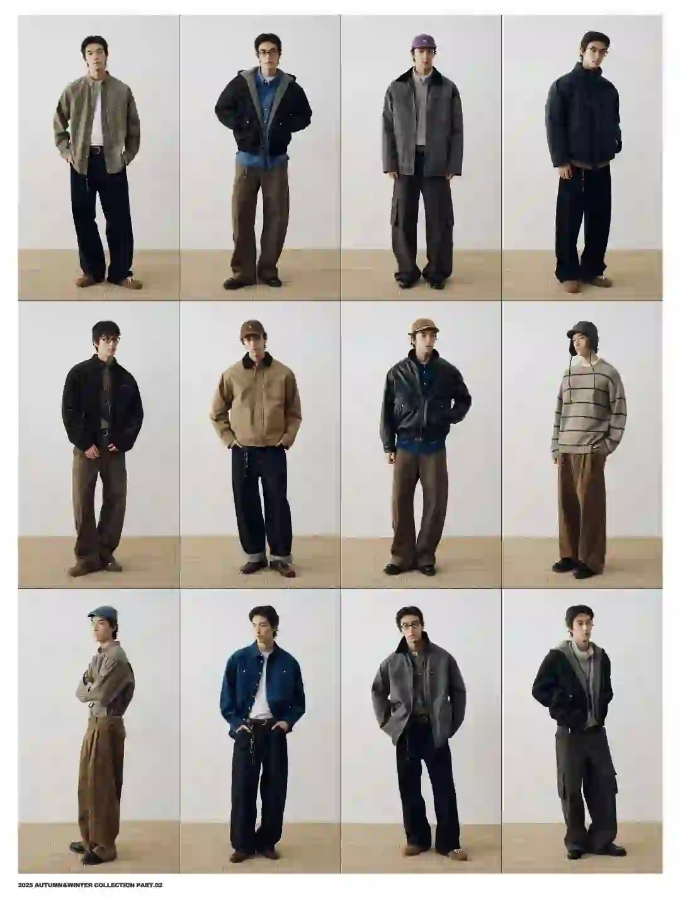
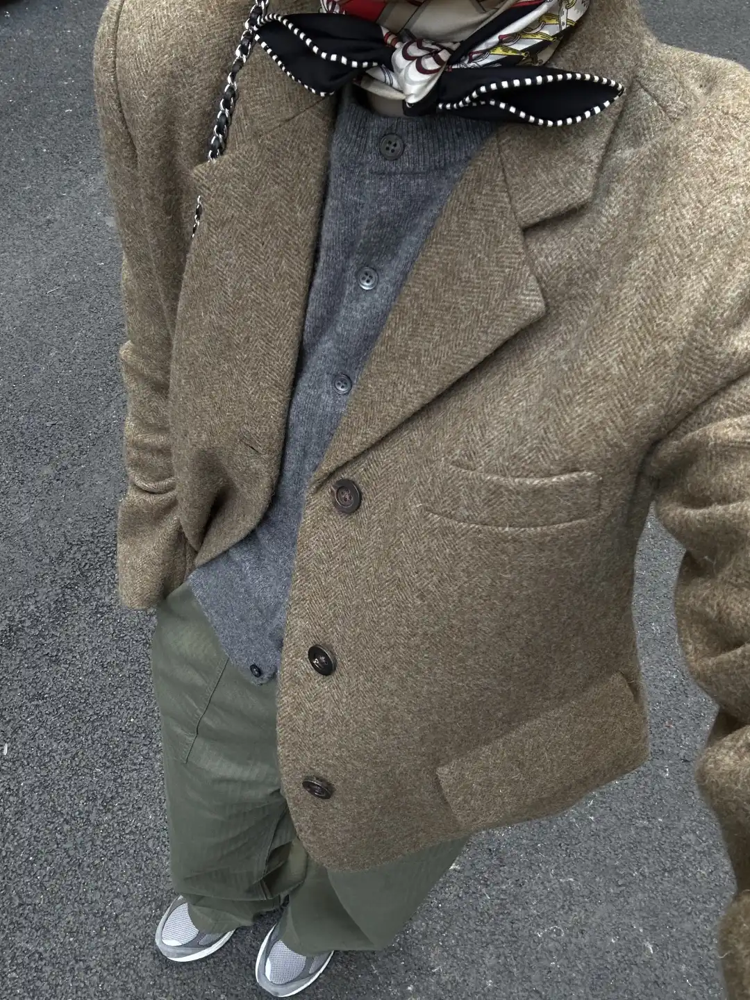
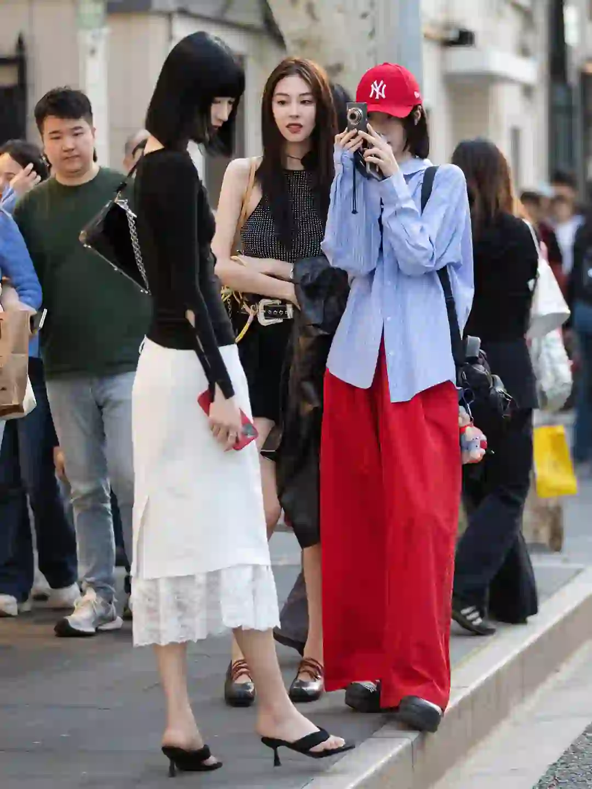
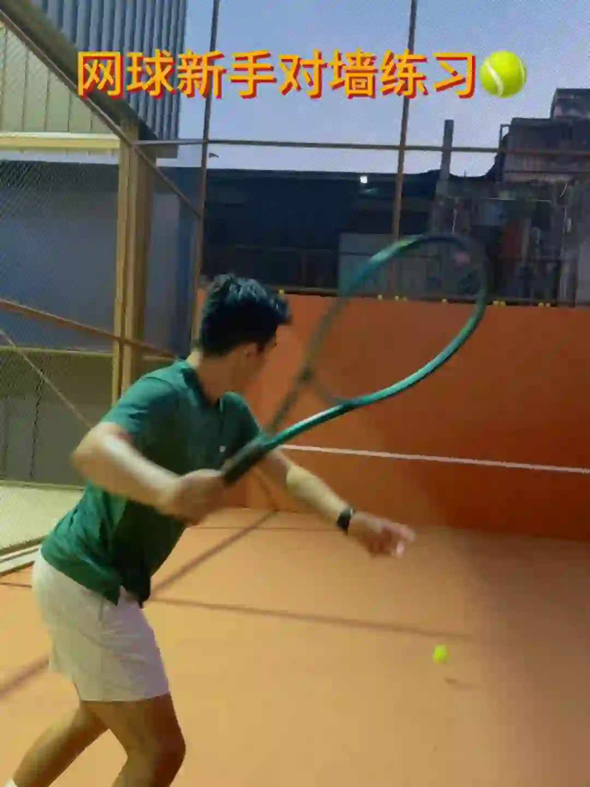
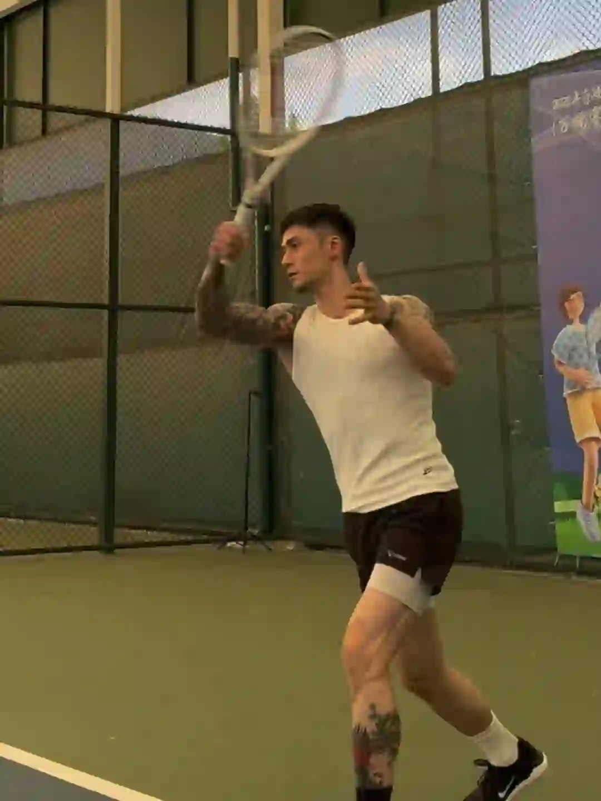

2026年3月24日
03月24日报告
生成时间：2026-03-24 · 范围：时尚 / 穿搭 / 网球
今日参考账号：摄影电焊机 / Vogue Business / Chi Y.Hwa
今日高信号标题：盘点上海夏季街头简约随性高级感穿搭分享 ｜ 诗人风、紧身轮廓…26 秋冬男装有哪些新趋势？ ｜ 化繁为简的Loro Piana老钱穿搭图鉴
竞品策略变化：未命中监控竞品样本
今日高信号标题：盘点上海夏季街头简约随性高级感穿搭分享 ｜ 诗人风、紧身轮廓…26 秋冬男装有哪些新趋势？ ｜ 化繁为简的Loro Piana老钱穿搭图鉴
竞品策略变化：未命中监控竞品样本
时尚 · 01
盘点上海夏季街头简约随性高级感穿搭分享
⭐ 403
👍 4235
今天可学
- 内容结构：人物 + 0图，更像单点表达
- 点赞高于收藏，偏流量型曝光内容，不值得原样照抄
- 评论活跃，适合加入观点冲突、对比案例或常见误区来拉讨论
- 正文入口：（正文为空或未取到）
时尚 · 02
诗人风、紧身轮廓…26 秋冬男装有哪些新趋势？
⭐ 143
👍 170
今天可学
- 内容结构：未判定 + 0图，更像单点表达
- 收藏效率高，说明用户把它当成可复用模板/知识卡，不只是刷到即过
- 正文入口：（正文为空或未取到）

时尚 · 03
化繁为简的Loro Piana老钱穿搭图鉴
⭐ 157
👍 238
今天可学
- 内容结构：人物 + 4图，更像单点表达
- 这条流量带有明显外部加成，只拆内容结构与包装，不原样复制流量来源
- 正文入口：25/26秋冬的Loro Piana简直是天花板级别的老钱穿搭了，整个色彩以大地色系为主； 高级的燕麦色主色调与针织，羊毛搭配，在极简主义里的奢华感真是一点没能藏住； 整个系列的版…
- 标签聚焦：#品牌分享 / #时尚资讯 / #loropiana / #绅士穿搭
时尚 · 04
人夫哥一周穿
⭐ 327
👍 1952
今天可学
- 内容结构：人物 + 4图，更像单点表达
- 收藏与点赞较平衡，可学选题包装，但仍需补强可执行细节
- 评论活跃，适合加入观点冲突、对比案例或常见误区来拉讨论
- 正文入口：老徐一周七天ootd 来咯
- 标签聚焦：#人夫感 / #轻熟男人 / #190 / #吴彦祖

时尚 · 05
25AW LOOKBOOK PART.2
⭐ 198
👍 329
今天可学
- 内容结构：人物 + 9图，更像资料型合集
- 收藏效率高，说明用户把它当成可复用模板/知识卡，不只是刷到即过
- 标签聚焦：#LOOKBOOK拍摄 / #穿搭灵感 / #搭配灵感 / #秋冬穿搭
时尚赛道今日方法论
- 样本依据：诗人风、紧身轮廓…26 秋冬男装有哪些新趋势？ / 25AW LOOKBOOK PART.2
- 当天结构信号：人物封面 + 0图 最强；优先学习样本 2 条，低收藏流量样本 1 条。
- 时尚赛道今天跑出来的是“审美判断 + 资料感整理”：像 诗人风、紧身轮廓…26 秋冬男装有哪些新趋势？ 这类高收藏样本，核心不是讲步骤，而是把趋势、风格线索和案例并排给足，用户才愿意以 84.1% 的收藏率反复回看。
- 执行建议：标题先抛出趋势/风格判断，再给明确收益；正文少讲空泛氛围，多给风格标签、对照案例和可复看的视觉结论，让内容更像灵感资料卡。
- 反例提醒：盘点上海夏季街头简约随性高级感穿搭分享 点赞高但收藏低，说明这类曝光型内容能带流量，不适合直接当明日主打法。
- 风险提醒：化繁为简的Loro Piana老钱穿搭图鉴 已标记为 [不可复制]，只拆结构，不作为明日选题原样跟进。
今日参考账号：碳酸饮料拜拜 / 林小花 / Shanghai sights
今日高信号标题：机场随拍图鉴✈️ ｜ 2025年度穿搭合集✨做自己的美丽主理人 ｜ 上海秋冬男士街拍年度18图（秋冬篇）
竞品策略变化：未命中监控竞品样本
今日高信号标题：机场随拍图鉴✈️ ｜ 2025年度穿搭合集✨做自己的美丽主理人 ｜ 上海秋冬男士街拍年度18图（秋冬篇）
竞品策略变化：未命中监控竞品样本
穿搭 · 01
机场随拍图鉴✈️
⭐ 1112
👍 15763
今天可学
- 内容结构：视频封面 + 视频，更像视频示范/单点表达
- 点赞高于收藏，偏流量型曝光内容，不值得原样照抄
- 正文入口：跟KUN同个航班到首尔了…
- 标签聚焦：#潮流POV / #flowfit / #机场穿搭

穿搭 · 02
2025年度穿搭合集✨做自己的美丽主理人
⭐ 1591
👍 8221
今天可学
- 内容结构：文字卡 + 18图，更像资料型合集
- 收藏与点赞较平衡，可学选题包装，但仍需补强可执行细节
- 评论活跃，适合加入观点冲突、对比案例或常见误区来拉讨论
- 正文入口：恍恍惚惚一年的时间就这样匆匆忙忙连滚带爬地结束了 这一组春夏秋冬的年度穿搭合集 不知道大家又是从哪一张照片关注小花的呢？ 回想过去每一年的成长好像都要伴随着一些失去 但庆幸的是总是…
- 标签聚焦：#2025回顾我的主理人时刻 / #时髦主理人 / #ootd每日穿搭 / #超会穿企划
穿搭 · 03
上海秋冬男士街拍年度18图（秋冬篇）
⭐ 610
👍 2803
今天可学
- 内容结构：人物 + 0图，更像单点表达
- 收藏效率高，说明用户把它当成可复用模板/知识卡，不只是刷到即过
- 评论活跃，适合加入观点冲突、对比案例或常见误区来拉讨论
- 正文入口：（正文为空或未取到）

穿搭 · 04
早春18套西装通勤穿搭合集🤵♀️
⭐ 787
👍 1599
今天可学
- 内容结构：文字卡 + 18图，更像资料型合集
- 收藏效率高，说明用户把它当成可复用模板/知识卡，不只是刷到即过
- 评论活跃，适合加入观点冲突、对比案例或常见误区来拉讨论
- 标签聚焦：#西装穿搭 / #穿搭合集 / #复古穿搭 / #早春穿搭

穿搭 · 05
她们的穿搭是把路走成了秀场
⭐ 356
👍 1798
今天可学
- 内容结构：人物 + 9图，更像资料型合集
- 收藏与点赞较平衡，可学选题包装，但仍需补强可执行细节
- 评论活跃，适合加入观点冲突、对比案例或常见误区来拉讨论
- 标签聚焦：#上海街拍 / #街头穿搭 / #潮流猎手 / #时髦站姐已就位
穿搭赛道今日方法论
- 样本依据：上海秋冬男士街拍年度18图（秋冬篇） / 早春18套西装通勤穿搭合集🤵♀️
- 当天结构信号：文字卡封面 + 18图 最强；优先学习样本 2 条，低收藏流量样本 1 条。
- 穿搭赛道今天最有效的是“整套可抄作业方案”：高收藏样本 早春18套西装通勤穿搭合集🤵♀️ 说明，只要场景清楚、look 数量够多、搭配结果一眼能看懂，就更容易拿到 49.2% 级别的收藏反馈。
- 执行建议：优先做通勤/职业/一周不重样/套装盘点这类清单式内容；封面先给完整上身结果，图组里再拆单品变化和搭配理由，不要只发单套氛围图。
- 反例提醒：机场随拍图鉴✈️ 点赞高但收藏低，说明这类曝光型内容能带流量，不适合直接当明日主打法。
今日参考账号：黑胡子魔法师 / Takuya Komura 小村拓也 / 李嘉烨
今日高信号标题：5.0定点直线｜快点！快点！在快点！🎾 ｜ attack tennis 🎾 ｜ 新手必看✅ | 5.0退役运动员教你对墙练习
竞品策略变化：未命中监控竞品样本
今日高信号标题：5.0定点直线｜快点！快点！在快点！🎾 ｜ attack tennis 🎾 ｜ 新手必看✅ | 5.0退役运动员教你对墙练习
竞品策略变化：未命中监控竞品样本
网球 · 01
5.0定点直线｜快点！快点！在快点！🎾
⭐ 1109
👍 4595
今天可学
- 内容结构：未判定 + 0图，更像单点表达
- 收藏效率高，说明用户把它当成可复用模板/知识卡，不只是刷到即过
- 评论活跃，适合加入观点冲突、对比案例或常见误区来拉讨论
- 正文入口：（正文为空或未取到）

网球 · 02
attack tennis 🎾
⭐ 941
👍 4333
今天可学
- 内容结构：视频封面 + 视频，更像视频示范/单点表达
- 收藏效率高，说明用户把它当成可复用模板/知识卡，不只是刷到即过
- 标签聚焦：#tennis / #rf / #テニス / #网球

网球 · 03
新手必看✅ | 5.0退役运动员教你对墙练习
⭐ 810
👍 801
今天可学
- 内容结构：视频封面 + 视频，更像视频示范/单点表达
- 收藏效率高，说明用户把它当成可复用模板/知识卡，不只是刷到即过
- 正文入口：墙是无法被打败的！一面墙是网球新手最好的训练搭子！看看对墙都可以练什么！
- 标签聚焦：#网球 / #网球尖子生 / #澳大利亚网球公开赛 / #网球教练

网球 · 04
秋季多巴胺/简单好看的6套网球入秋穿搭
⭐ 945
👍 1443
今天可学
- 内容结构：视频封面 + 视频，更像视频示范/单点表达
- 收藏效率高，说明用户把它当成可复用模板/知识卡，不只是刷到即过
- 评论活跃，适合加入观点冲突、对比案例或常见误区来拉讨论
- 正文入口：-秋冬保持轻巧不臃肿 一件外套搭配 可穿可脱更有层次感！ 👕Kswiss 卢布列夫 🩳Kswiss 卢布列夫 👟Nike Court Zoom NEX 🎾Head Extreme …
- 标签聚焦：#网球穿搭ootd / #网球穿搭 / #ootd每日穿搭 / #男士穿搭

网球 · 05
网球真开心
⭐ 236
👍 4249
今天可学
- 内容结构：视频封面 + 视频，更像视频示范/单点表达
- 点赞高于收藏，偏流量型曝光内容，不值得原样照抄
- 评论活跃，适合加入观点冲突、对比案例或常见误区来拉讨论
- 正文入口：久违的一天三练 早上依旧空腹爬坡和八段锦拍八虚 下午两小时的网球 强度不大但巨热 浑身湿透 狂饮五瓶水 回到家衣服不换了 趁着太阳刚刚落山温度非常舒适 于是慢跑了4㎞ 本以为可以跑…
- 标签聚焦：#网球 / #vlog / #ootd / #DRK
网球赛道今日方法论
- 样本依据：5.0定点直线｜快点！快点！在快点！🎾 / attack tennis 🎾
- 当天结构信号：视频封面封面 + 视频 最强；优先学习样本 4 条，低收藏流量样本 1 条。
- 网球赛道今天胜出的不是热闹球场感，而是“动作纠错/装备收益/新手可执行”：高收藏样本 新手必看✅ | 5.0退役运动员教你对墙练习 证明，只要用户能马上拿去练，收藏率就能来到 101.1%。
- 执行建议：标题写清动作部位、错误修正或装备收益；内容里给慢动作、步骤和上场场景。明星/赛事样本只借包装，不把热点本身当方法论。
- 反例提醒：网球真开心 点赞高但收藏低，说明这类曝光型内容能带流量，不适合直接当明日主打法。
- 自动抽取规则：仅收录收藏率 >20% 且未被标记为 [不可复制] 的标题模板
- 写入目标：/Users/zhangxiaosong/shared/context/xhs-knowledge/topics/title-templates.md
- 把今天高收藏、高可复制的打法优先塞进明日发帖计划
- 竞品若连续两天从展示型转向教程/资料型，单独开策略变更记录
- 对被标注 [不可复制] 的样本，只拆结构，不抄流量来源